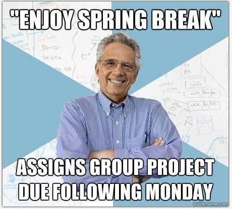

What is the Culture of Computer Science?

Computer Science as a discipline values:
- Attention to Detail - the little things matter
- Analytical Thinking - being able to break down large problems
- Real-world work, completed projects, research, internships and co-ops
- Learning how to learn - because tech is always changing you have to always be growing and evolving your skills
New engineering students at Syracuse University are expected to take 17 credit-hours during their first semester. This is considered an achievable workload. Professors suggest spending at least as much time outside of a class as you do in it, for every course you take. 17 + 17 = 34 hours a week, check my math. For harder courses you'll need to spend even more time figuring stuff out. Something to keep in mind as you start your semester.

This is an exaggeration, but it's not that far from the truth.
Try out programming! It's not that hard. Click the little play button to see what happens. Now what happens if you change "red" to "blue" and then click run again? What happens if you change the 50 to 10?
What You Will Learn
Todo
Advice for New Students in CS
Todo
Research, Internships, Co-ops
Todo
A Quick History Lesson
Who doesn't love learning history?
Issues with the Culture of Computer Science
The first computer programmer, Ada Lovelace, was a woman but women are underrepresented in computer science. According to the Office of Inclusive Excellence at the college of Engineering and Computer Science here at SU, the faculty in the college is disproportionately represented by white and Asian men in comparison to the student population. Efforts are being made to widen the search for faculty, but this will take time. The Office of Inclusive Excellence found that women received much less research funding than men. The lack of diversity in STEM in general and computer science in particular has consequences for the culture of the field. The popular perception of "Brogrammer" culture drives away talent and encourages bright people to enter other disciplines.The End
In conclusion, the culture of computer science can be summed up with:
- the good
- Culture promotes persistence, patience, self-teaching, and constantly growing your skills.
- The impact of the free software/open-source movements means there's plenty of example code out there to learn from, free documentation and tutorials are abundant, so anyone can build something cool and share it with the world.
- the bad
- Real issues with diversity that have only started to be addressed
- Recent efforts to improve have a long way to go
- Will take time for things to change for the better
- and the ugly attempts at dancing
- Behold the founders of Microsoft celebrating the launch of Windows 95 - I had to watch this and now you do too.